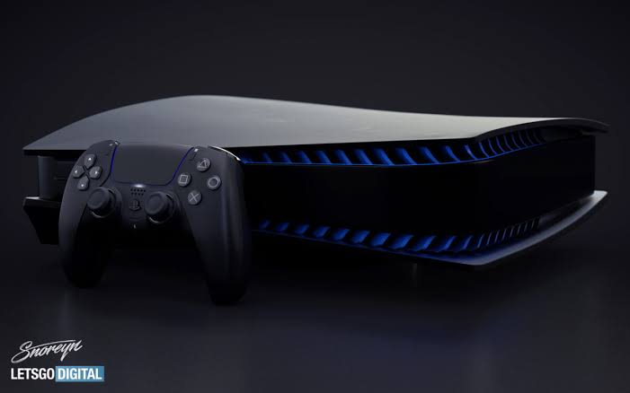

PlayStation 1
Servicio técnico para mantenimiento y diagnóstico de la consola PlayStation 1.
Solicitar servicioConoce nuestras consolas PlayStation y solicita un servicio técnico.
Servicio técnico para mantenimiento y diagnóstico de la consola PlayStation 1.
Solicitar servicioServicio técnico para mantenimiento y diagnóstico de la consola PlayStation 2.
Solicitar servicioServicio técnico para mantenimiento, diagnóstico y reparación de la consola PlayStation 3.
Solicitar servicioServicio técnico para mantenimiento, diagnóstico y reparación de la consola PlayStation 4.
Solicitar servicio
Servicio técnico para mantenimiento, diagnóstico y reparación de la consola PlayStation 5.
Solicitar servicio